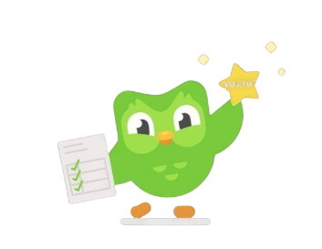

Selamat datang di Duo Sigma!
Belajar di sini nggak pake ribet seru, ringan, dan gampang masuk ke otak.
Yuk upgrade skill kamu dengan cara yang lebih fun, lebih fresh, dan tetap produktif!
Belajar santai, hasil mantap
Belajar itu kadang bikin otak ngelag, tapi tenang,
di Duo Sigma kamu bisa belajar pelan-pelan tapi nempel, kayak stiker di motor baru.
Nggak perlu jenius yang penting konsisten!
Mau naik level? Tinggal gas!
Materi di sini disusun rapi, jelas, dan gampang dipahami.
Cocok buat kamu yang pengen upgrade skill tanpa drama dan tanpa pusing.
Belajar sendirian tuh kadang bikin ngantuk level dewa.
Makanya di Duo Sigma, kamu bakal ditemenin materi yang interaktif, biar otak tetap online
nggak loading terus kayak WiFi tetangga.
Mau hasil cepat tapi tetap santai? Bisa banget.
Duo Sigma itu ibarat tempat nongkrong edukasi
seru, ringan, tapi bikin kamu auto naik level tanpa sadar.
Belajar jadi kayak main game tapi XP nya real!
